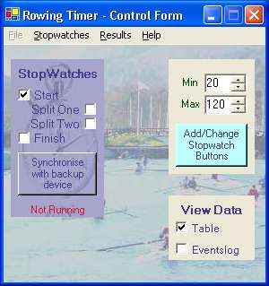
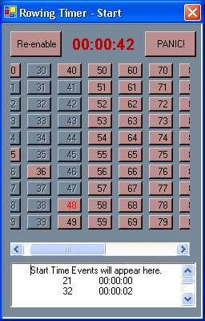
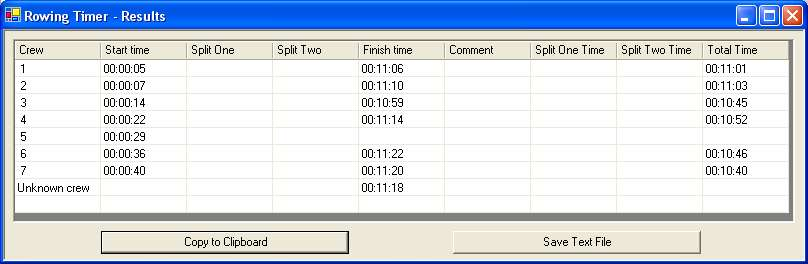
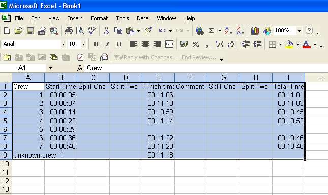
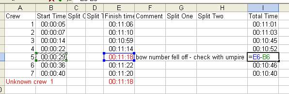
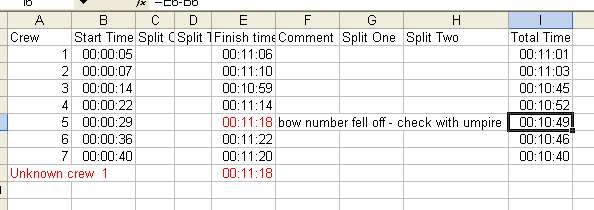
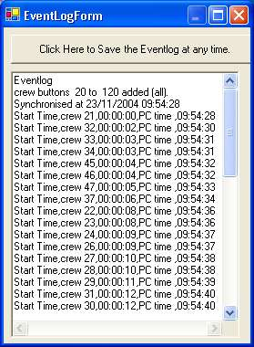
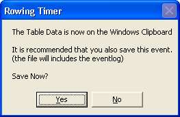

Start Form.This is the main form for the program, and is the control for all the others. Consequently if you exit this form, you shut all others and leave the program. I have, therefore, protected it with an "Are you Sure?" question.Regardless, when you do exit, all information generated is transferred on your clipboard (more on this later). When using the program, the first thing you should do is adjust the minimum and maximum crew numbers to suit the event (or division) that you are timing. Defaults are 1 and 50 respectively, but I have allowed and tested the program for up to 500 crews! Crew buttons can be added or removed at any time. The check boxes (and stopwatch menu) will make the "watches" appear and disappear. There are 4 watches available to you.... Start, Split 1, Split 2, and Finish. You may decide to use them all, or maybe just one or two. The watches keep running and updating in the background, and you can open and close these at will. I have defaulted the watches to appear in a grid along the top. With a desktop of over 1024 wide this works well. You can, of course, move the forms around. However, should you wish to realign them then at any time, there is a menu option on the startform to "align to grid". Like the watches, the Results form and eventlog can be opened and hidden at any time. |
 |
|  |
Stopwatch FormThis form has shows the time elapsed since synchronisation.It has a collection of numbered buttons. These relate to the crew numbers you entered initially. If you have more than 50 crews, a scroll bar will appear to allow easy navigation. click on a crew button as the crew arrives at the relevant point. The time is recorded in the relevant column, and the button becomes inactive. One other button is on the stopwatch forms. It is "PANIC button" A click on this button records adds a new line of data to the results, and records a time in the relevant column. It is obviously hoped that you are able to identify a crew and click on the correct button swiftly, but this provides an alternative should a bow number be unclear or its value unexpected for whatever reason. When you add a time to the results in this way, you will need to make a note of why and manually adjust the results later. |
Results FormBelow is a sample results form from a small (7 boat) head race.Only the Start and Finish times were entered. |
|  |
|
Crew 5 lost their bow number, so the "PANIC! button" was used at the finish
point. (this button can be used at any time to record a time). If you have
three crews crossing a point together it is the easiest way of recording times
close together.
As they were the only unknown result, this was easily altered in excel, along with a comment from the Umpire |
Step one- "paste" into Excel. |
|  |
Step two- As Rowing Timer time values are in Excel format, the usual equations can be used to calculate time differences. |
|  |
Final Step- with this result. |
|  |
|  |
One Last thing.... there is an eventlog which records everything, and can be
saved at any time. Hopefully you'll never need it, but it can provide further
information. You are prompted to save this automatically on exit of the
program.
 |